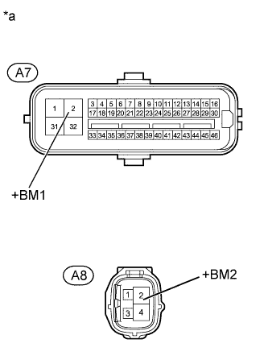

DTC C1253 Pump Motor Relay |
| DTC Code | DTC Detection Condition | Trouble Area |
| C1253 | There is a motor system circuit (motor input circuit) malfunction. |
|
| 1.PERFORM ACTIVE TEST USING INTELLIGENT TESTER (MOTOR RELAY) |
Turn the engine switch off.
Connect the intelligent tester to the DLC3.
Turn the engine switch on (IG).
Turn the intelligent tester on.
Start the engine.
Enter the following menus: Chassis / ABS/VSC/TRC / Active Test.
| Tester Display | Test Part | Control Range | Diagnostic Note |
| Motor Relay | Motor relay | Relay ON/OFF | An operating sound of the motor can be heard. |
Check the operating sound of the motor individually when operating it with the intelligent tester.
|
| ||||
| OK | |
| 2.RECONFIRM DTC |
Clear the DTCs (Click here).
Turn the engine switch off.
Depress the brake pedal more than 40 times.
Turn the engine switch on (IG).
Wait until the pump motor stops.
Depress the brake pedal several times until the pump motor turns on. (Procedure A)
Wait until the pump stops. (Procedure B)
Repeat the above steps (procedure A and B) 3 more times.
Check if the same DTC is output (Click here).
| Result | Proceed to |
| DTC is not output | A |
| DTC is output | B |
|
| ||||
| A | ||
| ||
| 3.CHECK TERMINAL VOLTAGE (+BM1, +BM2) |
Disconnect the A7 and A8 skid control ECU connectors.
|  |
Measure the voltage according to the value(s) in the table below.
| Tester Connection | Condition | Specified Condition |
| A7-2 (+BM1) - Body ground | Always | 11 to 14 V |
| A8-2 (+BM2) - Body ground | Always | 11 to 14 V |
| *a | Front view of wire harness connector (to Skid Control ECU) |
|
| ||||
| OK | |
| 4.CHECK HARNESS AND CONNECTOR (GND1, GND2 AND GND3 TERMINAL) |
Disconnect the A7 and A8 skid control ECU connectors.
Measure the resistance according to the value(s) in the table below.
| Tester Connection | Condition | Specified Condition |
| A7-1 (GND1) - Body ground | Always | Below 1 Ω |
| A7-32 (GND2) - Body ground | Always | Below 1 Ω |
| A8-4 (GND3) - Body ground | Always | Below 1 Ω |
|
| ||||
| OK | |
| 5.RECONFIRM DTC |
Clear the DTCs (Click here).
Turn the engine switch off.
Depress the brake pedal more than 40 times.
Turn the engine switch on (IG).
Wait until the pump motor stops.
Depress the brake pedal several times until the pump motor turns on. (Procedure A)
Wait until the pump stops. (Procedure B)
Repeat the above steps (procedure A and B) 3 more times.
Check if the same DTC is output (Click here).
| Result | Proceed to |
| DTC is not output | A |
| DTC is output | B |
|
| ||||
| A | ||
| ||